Description of design efforts:
This week, I got familiar with my team: Jehan Shah, Sen Wang, and Manav Bhasin. I also helped brainstorm the various software and hardware components of our project & ways to stay organized as a team throughout the semester.
Week 2
Date: 09/02/2022
Total hours: 18
Description of design efforts:
This week, I worked on the functional specification, ROS research, setting up the embedded IDE, and configuring our MCU with a UART connection.
• Functional Specification
For this assignment, I elaborated on the economic and other external constraints for our project. After we decided on the components to include in our final design, we quickly began to see the cost of our product go up if we were to market it commercially. For the purposes of this project, however, we were able to reuse components in the lab and from home as cost-effective solutions. I identified economic constraints with costly components such as the LiDAR, Jetson Xavier NX, and an external NVIDIA GPU-enabled system to view the 3D model. In addition, I explained how another constraint for our project is the lighting of the subject when recording the images for reconstruction.
• ROS Research
I completed my research of utilizing pre-built ROS sensor packages, and I dug deeper by taking notes on how to make our own ROS nodes. This week we decided to make our own nodes for getting the image data from our camera, so my research will prove to be useful in our software implementation. I used the free textbook [1] and YouTube tutorials [2] from ROBOTIS to compile my research. I also shared my notes with the rest of my team to allow for further collaboration.
• Set Up Embedded IDE
I researched IDEs that would work best with the STM32F091RCT6 microcontroller from ECE 362 since we decided to use that MCU for our project. Because the IDE we used in ECE 362 was no longer supported, I decided the STM32CubeIDE would work best for us since it’s most similar and wouldn’t require us to relearn an environment.
• UART
I started to configure and program UART on a STM32F091RCT6 MCU to prototype the communication between our microcontroller and Jetson Xavier. I connected the USART5 to a USB-to-serial convertor in order to test the output from the microcontroller. I’ve been using PuTTy to read the data transmitted through the UART connection to my computer for the time being. Once I get this working, I will need to test communication between the MCU and the Jetson Xavier.
Description of design efforts:
This week, I worked on DMA, USART, and timer research along with configuring our MCU to work with DMA. I also completed our UART connection and debugged it.
• Research
I used my notes and previous lecture videos from ECE 36200 to better understand direct memory access for the ability to send data through USART without the CPU overhead (for faster MCU processes). I was able to identify the proper registers and start designing a data workflow for collecting data from the LiDAR. After looking into USART (specifically the synchronous functionality), I was able to see that we could not use the synchronous clock with our Jetson nano [1] since it only supports asynchronous transmission and reception. In addition, I looked into basic timers to explore our idea of transmitting data on interrupt every half second. All in all, this research will prove useful for devising the best method to transfer sensor data from our microcontroller to the Jetson nano.
• UART
I completed the UART connection to our MCU and debugged it. My test included transmitting characters and strings through a USB-to-serial converter, and the results were observed on my laptop with PuTTY. Afterwards, I reconfigured our UART to work with USART3 instead of USART5 to open those pins for other components. The progress on the UART connection will prove useful for sending and receiving data from our microcontroller in the future.
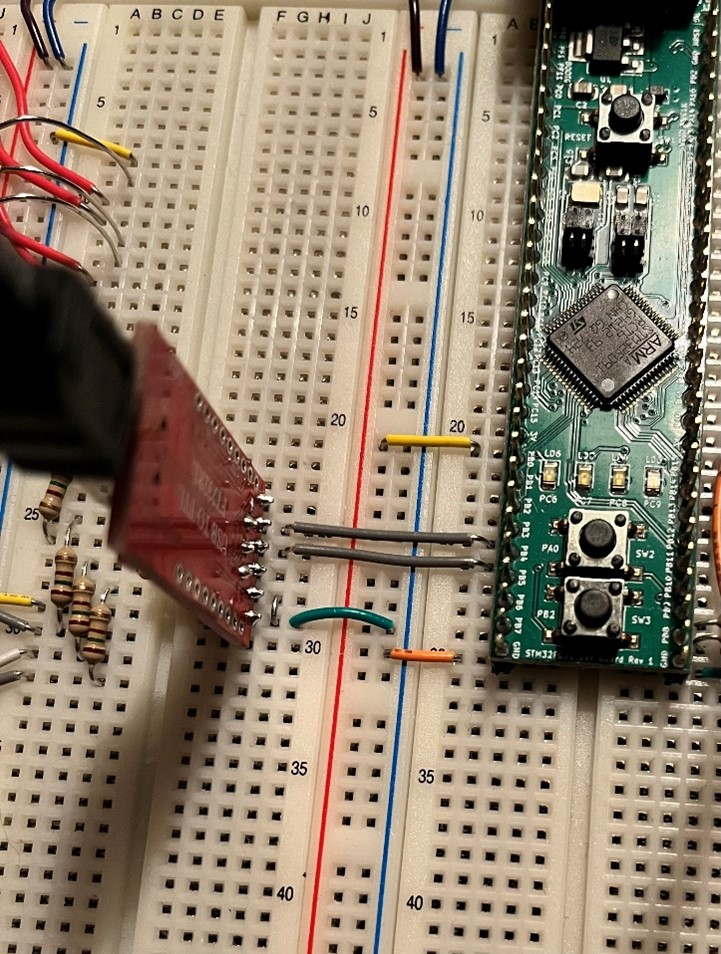
Figure 3.1 – UART Setup for Debugging
• DMA
I found the proper DMA channel (DMA1_Channel7) to connect to our UART, and I start initializing the registers for our data transfers. Now that the registers are set, I can begin testing and debugging this implementation.
For the following week, I will finalize the DMA setup and test the UART communication with this addition. Furthermore, I will set up the timer functionality and test it with the rest of the UART system. Jehan and I will also work together on code reviews of other components and possibly transferring data from the LiDAR to the nano.
Description of design efforts:
This week, I worked on implementing DMA with UART and adding a timer to our UART transmission.
• DMA
I set up a buffer with characters to send over UART, and I used a serial-to-USB converter to debug the transmission process. With some tweaking of the CCR register, the DMA channel transferred data from memory to the UART transmission register successfully. There was no data loss or lag in transmission. This will be useful for transmitting sensor data from the microcontroller to the Jetson nano over UART. The next step is to decide if we want to transfer from peripheral (sensor) to peripheral (UART) or from memory to peripheral (UART).
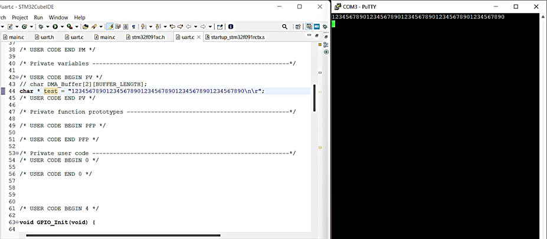
Figure 4.1 – Test showing DMA memory buffer being transmitted over UART
• Timer
I configured timer 7 to interrupt every two seconds, and this will be the foundation for our timed data transmission. Every time this interrupt is triggered, it should enable a DMA transfer from memory to our UART peripheral. Now that the timer is set up, I can begin testing transfers.
For the following week, I will finalize the timer setup with DMA and UART to create timed transmissions of data. In addition, I will test and debug this process to ensure there’s no data loss and all components are working properly in conjunction. I will also work with other team members to prototype sending data to the Jetson nano using this new process.
Week 5
Date: 09/23/2022
Total hours: 12
Description of design efforts:
This week, I worked on integrating the embedded software components and testing all the hardware on one breadboard. The only component not included in this process is the IMU since we are still prototyping data collection. In addition, I’m tasked with accepting keypad input on interrupt.
• Software Integration
After much condensation of the programming, I was able to successfully integrate an organized version of the LCD code that will be used for our project. I made use of the debugger in the STM32CubeIDE to resolve any complications and test all functionality. Afterwards, I attempted to integrate the keypad code; however, after debugging, I came to the conclusion that the keypad initialization wasn’t properly working. I will need to continue to debug and resolve this issue to complete the integration process. Overall, this was an essential task to ensuring all the hardware and software components work together with our microcontroller before finalizing our PCB. Figure 5.1 below shows the integration of all the hardware components on a single breadboard.
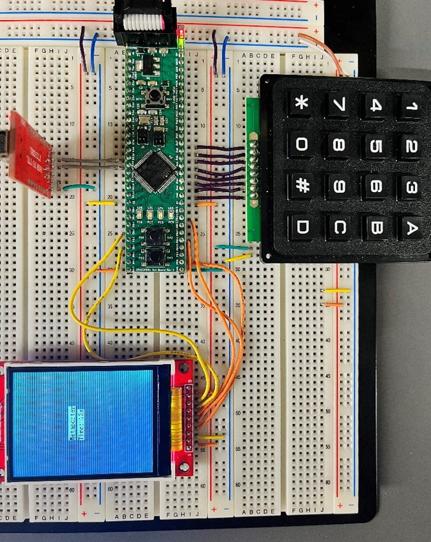
Figure 5.1 – Integration of hardware components for software testing
• Keypad Interrupts
I configured EXTI lines 4-7 to trigger an interrupt on a rising edge for the PA4-PA7 pins. Due to the issue with the keypad initialization, the interrupt testing will have to hold off until all issues are resolved. I also suspect that I’ll need to debounce the buttons once the component works properly.
For the following week, I will resolve keypad issues, test the interrupt implementation, and integrate the IMU when it is ready. Depending on the keypad results, I may also debounce the buttons to get clean input from the user. All in all, this whole process will be crucial for guaranteeing that all components can interact well together before our design is finalized.
Week 6
Date: 09/30/2022
Total hours: 15
Description of design efforts:
This week, I paused on embedded software integration and started work on gathering data from the BNO055 IMU sensor. For the purpose of streamlining the data collection process, Jehan and I pair programmed in the STM32CubeIDE.
• IMU Data Collection
To start, we copied over the code used to initialize and communicate over I2C with the LiDAR sensor. Since we are no longer using this component, we decided to reuse the connection and code with our IMU. After, we utilized the datasheet [1] to initialize the appropriate registers for fusion data collection using quaternions. In order to verify the proper registers are being set through I2C, we used the Analog Discovery 2 Oscilloscope to record the communication. This process can be shown in Figure 6.1 below.
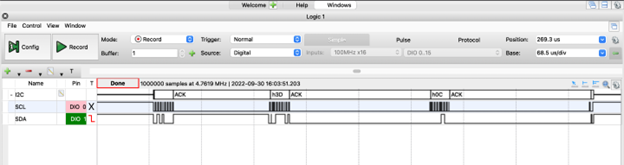
Figure 6.1 – Oscilloscope reading of setting the IMU fusion mode
Once we were sure the registers were set up appropriately, we wrote a function to read the quaternion data. We integrated UART to debug and see the data with a USB-to-serial converter. The figure below shows this wiring.
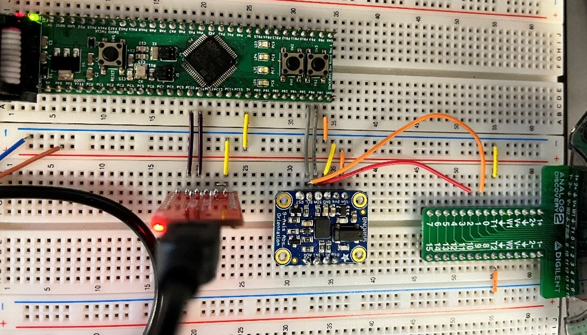
Figure 6.2 – Circuit wiring with IMU, UART, & Oscilloscope for testing
The data successfully transferred, and we were able to see the w-axis, x-axis, y-axis, and z-axis values after constructing a string. Then, we brainstormed ways to constantly read the data efficiently. After extensive testing and failure, we discovered that the interrupt pin on the IMU could not be used for continuously reading sensor data as it becomes ready. The reason for this is due to the firmware. Our BNO055 IMU came with a firmware version of 3.11 while the interrupt functionality is only in version 3.14 or higher. Seeing as there is a lack of resources on updating this firmware, we went with an alternate option to read and send data on a timer interrupt. I integrated Timer 7 and DMA Channel 7 from Week 4 to send IMU data over UART at a rate of 100 Hz. Figure 6.3 below shows the output of this integration.
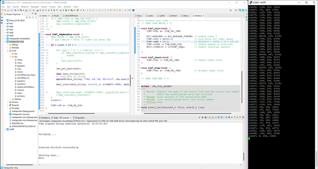
Figure 6.3 – Output of a data transfer with DMA and the timer
For the following week, I will research and determine whether sensor calibration is necessary, and I will explore the idea of scaling integer data to convert it into floating-point values. As we extensively test each component, I will also be responsible for further integrating them all. Overall, this week was very productive since we successfully collected and transmitted data from our IMU, which will eventually be used to build a 3D model.
Description of design efforts:
This week, I completely reprogrammed and tested our 4x4 matrix keypad, and I tested receiving data over UART with our nano.
• Keypad
Initially, I referenced my Lab 7 from ECE 362 to understand how to debounce a keypad, and I utilized portions of my lab code to set up our implementation. Using the Timer 6 interrupt every one millisecond, each row is individually set to high (in succession). After setting a row to high, the program gets the input values of the columns and stores it in an integer. Then, it loops through the column values for the current row, and if a column value is high, it obtains the key pressed using a pre-defined 2D-array with the keypad characters. If no key is pressed, it should receive our escape character which we have defined as ‘z’. Using the USB-to-serial converter and UART, I tested the keypad input for each button. Figure 7.1 below shows the results of this test. Afterwards, the keypad was easily integrated in our project by adjusting the Timer 6 ISR to start and stop IMU data collection if the corresponding buttons are pushed. This progress is significant since the keypad will be the main interface our users will interact with to perform different functionalities.
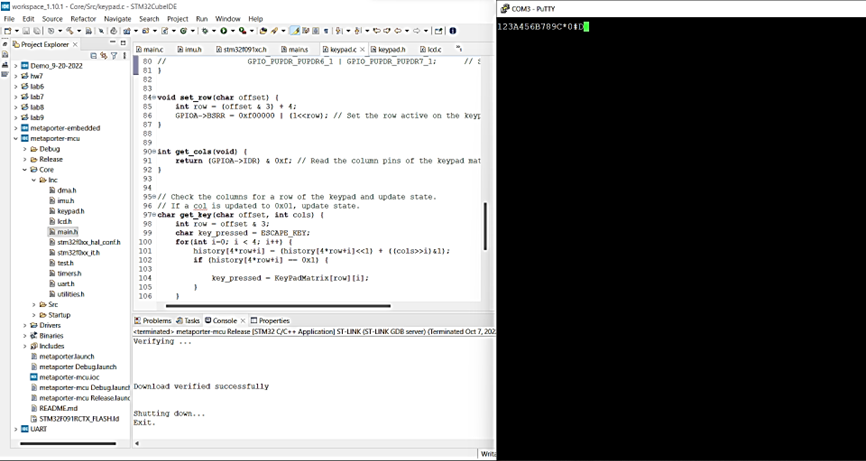
Figure 7.1 – Testing keypad input over UART
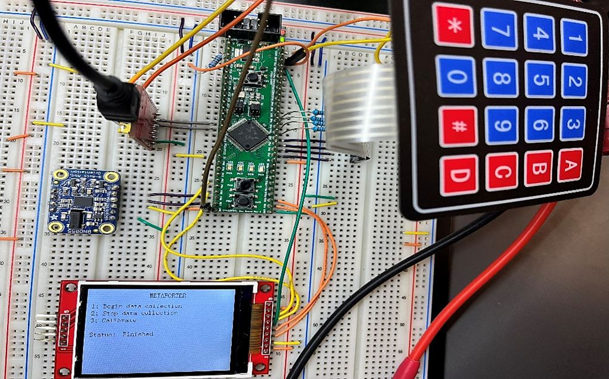
Figure 7.2 – Fully integrated board with the keypad
• UART with Nano
I used the USB-to-serial converter to test sending IMU data over UART to the Jetson nano. After that was successful, I hooked up the appropriate wires to the RX and TX pins on the nano to test a direct connection. Figure 7.3 below shows the successful results of this test. Both tests used the terminal multiplexer Screen to view the data transfer over UART.
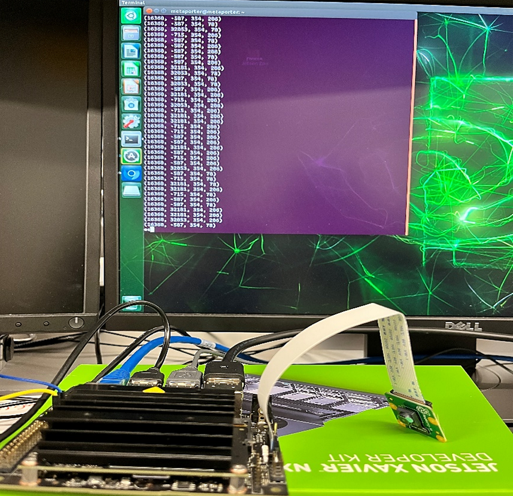
Figure 7.3 – Testing UART with nano & IMU data
For the following week, I will continue working on the nano integration by learning more about implementing our own ROS nodes. I will also write a python script to read raw data from the UART serial port and write it into a file.
Week 9
Date: 10/21/2022
Total hours: 7
Description of design efforts:
This week, I looked into IMU calibration and wrote a python script to receive data over UART and manage it appropriately on the Jetson nano.
• IMU Calibration
Using the BNO055 datasheet [1], I was able to understand our IMU’s calibration. Once powered on, the IMU begins collecting data and attempting to calibrate. Therefore, all data collected before the IMU is properly calibrated should be discarded in order to not skew the data. For our implementation, we will check the system’s calibration status and only begin transferring data when this bit is set. I created a function that reads the proper IMU register through I2C, and I need to proceed with testing how long the IMU will take to start collecting calibrated data.
• Python Script for UART Data
I wrote a python script to connect to the appropriate serial port (/dev/ttyTHS1) for receiving UART data, and I tested this connection by printing the data directly on the terminal. Our team decided to leave the transmitted IMU data as strings, so I set up the script to write to a text file for now. Eventually, we will use ROS nodes and messages for streamlining data collection. The figure below shows a test of data being printed on the terminal.
Figure 9.1 – Test printing IMU data with python script
For the following week, I will finalize the IMU calibration and research ROS messages for IMU quaternion data to write publisher and subscriber nodes. This sensor data will eventually be used with our SLAM library to determine the camera pose for providing an accurate reconstruction.
Description of design efforts:
This week, I looked into IMU axis remapping and reacquainted myself with ROS2 for writing nodes.
• IMU Axis Remapping
Using the BNO055 datasheet [1], I was able to understand how to remap the axes of our IMU. By setting the appropriate bits in the AXIS_MAP_CONFIG register for remapping the y-axis and z-axis, our IMU can output the appropriate results while sitting in a 90o counterclockwise position. Figure 10.1 below uses an image from the datasheet [1] to show the original axes versus the remapping. In addition to adjusting the axes, the y-axis is remapped to the negative z-axis, so I set the proper bit in the AXIS_MAP_SIGN register to account for the negative orientation. Figure 10.2 below is pulled from the datasheet [1] and shows the proper bits and registers to set for remapping.
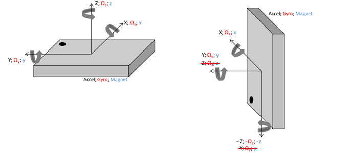
Figure 10.1 – Normal IMU Axis Mapping vs. Remapping
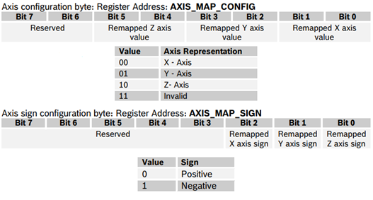
Figure 10.2 – IMU Axis Remapping Registers and Bit Shifts
• ROS2 Research
I started watching a longer crash course [2] in ROS2 for the particular version we will be using (Humble Hawksbill). The crash course goes in-depth over ROS2 basics, creating packages, creating publisher and subscriber nodes, and creating services and clients. This will lay the foundation for implementing the proper ROS2 Python nodes for our IMU sensor data. Currently, our data is in quaternions, so this built-in quaternion ROS2 message [3] may be useful for setting up our nodes. Jehan suggested that I look into this a little deeper, so I took his advice to familiarize myself with all these concepts before programming.
For the following week, I will set up the ROS2 nodes for IMU data and test the IMU calibration and remapping on our prototyping board. This will ensure that the IMU integration is complete along with the postprocessing before incorporating the SLAM library.
Description of design efforts:
This week, I tested the IMU remapping and calibration that I programmed last week. I also began reformatting and collecting additional data from the IMU that will be used in the VSLAM package. In addition, I assisted my teammate with soldering components on our PCB.
• IMU Axis Remapping & Calibration
Using UART and PuTTY to examine the output data, I was able to test the remapping of our IMU axes. After cross-referencing our IMU’s position with the orientation of the acrylic plates for our project’s packaging, I made the necessary transformations to remap the axes and ensure we have the correct output data. Figure 11.1 below shows the updated remapping of the axes to account for the IMU’s new placement. In addition, I tested the calibration of our IMU by timing the switch from calibration mode to data collection mode, and I performed the figure eight motions with the IMU which were recommended by the Adafruit documentation and video [1]. There was minimal delay in the data collection process since the calibration took about 30 seconds at most. Overall, this will help us collect more accurate data from our IMU to get a better camera pose with our VSLAM package and a more precise reconstruction.
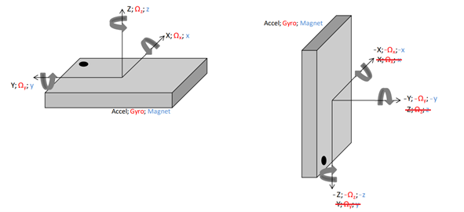
Figure 11.1 – Normal IMU Axis Mapping vs. Updated Remapping
• Data Collection & Reformatting
For our ROS2 VSLAM package [2], the IMU topic it subscribes to requires orientation, angular velocity, and linear acceleration data. Since we are only collecting and transferring quaternion orientation data at the moment, I have begun reprogramming our IMU data collection to include angular velocity and linear acceleration. In addition, I reformatted the data being sent over UART in order for it to be easily processed and parsed on the Jetson nano. Figure 11.2 below shows the new format for the data being sent over UART as a string. This will make it much more trivial to provide our VSLAM package with the appropriate data in the format it requires.
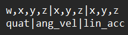
Figure 11.2 – Reformatting of IMU data
• Soldering
Our PCB was finally delivered this week, so I helped Sen with soldering resistors and capacitors. I learned that you can never have too much flux while soldering, and a steady hand and patience help when applying solder to components. Figure 11.3 below shows the components we were able to solder this week. Once we complete the soldering of our PCB, we can run tests to ensure our board operates appropriately before integrating it with our Jetson nano in the packaging.
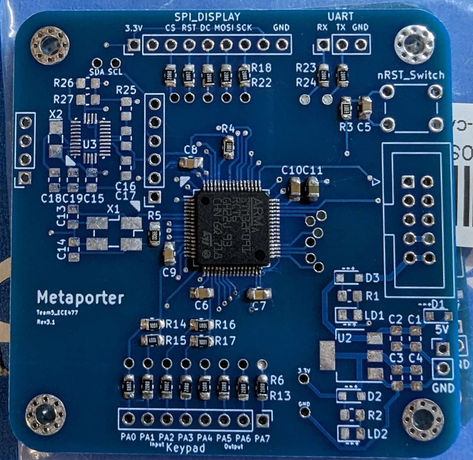
Figure 11.3 – PCB with soldered components
For the following week, I will continue to reprogram the IMU data collection and parse the data appropriately on the Jetson nano to set it up for our VSLAM package. In addition, I will understand how data can be transferred to the host machine from the Jetson nano since the host machine will run the VSLAM package. This will bring us closer to a better camera pose and a more accurate 3D reconstruction.
Description of design efforts:
This week, I worked with Jehan to set up our camera, ROS environment, docker container, and camera data collection scripts. In addition, I helped fix the keypad issues on our PCB with a software update.
• Camera
Using the Arducam documentation [1], I worked with Jehan to set up the camera with the proper driver and dependencies. After installing the IMX477-stereo driver, we noticed an error with the I2C probe and the nano’s communication with our stereo camera. Figure 12.1 below shows this error. Jehan and I went through the documentation for our camera and downloaded all the dependencies we could find. We made sure each hardware connection was making proper contact; however, this error persisted. After running additional tests, we were able to get video and snapshots from both cameras using the gstreamer command-line interface. These results were promising even though the ROS package supplied by the manufacturer did not work, and the issue had to do with this probe error (refer to Figure 12.2). Therefore, we began to write our own ROS2 package using parts of their code to collect camera screenshots and publish images to the appropriate topics. We needed an Ubuntu 22.04 environment to run ROS2 Humble Hawksbill, so we found an NVIDIA docker image that came pre-installed with ROS2 to use for writing and running our nodes on the Jetson nano [2]. After building and mounting our workspace directory to the container, we attempted to build and run ROS2 example tests; however, each time we tried building the packages, the nano froze and gave low memory notifications. Since programming in ROS2 with the container failed to work, we decided to proceed with writing a Python script to retrieve camera snapshots without the ROS2 implementations. This week’s work involved a lot of obstacles and problem-solving, but we are currently on track to get the images and information we need for our VSLAM package and NERF.
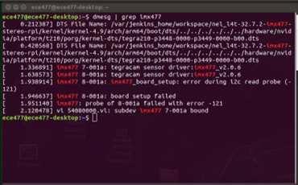
Figure 12.1 – I2C probe error with camera driver
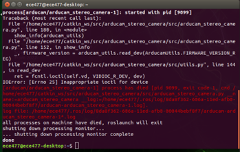
Figure 12.2 – ROS error with camera package
• Keypad
After numerous software and PCB-multimeter tests, we discovered that our keypad needed to be flipped for its appropriate position in our packaging; therefore, I updated the software to swap the column and row pins. In addition, the pull-up resistors on our keypad inputs were improperly set high when they need to be pulled low for our software implementation. Joe and Sen caught this discrepancy, and we were able to run successful tests after unsoldering the pull-up resistors. Figure 12.3 below shows the new keypad orientation being tested with the PCB.
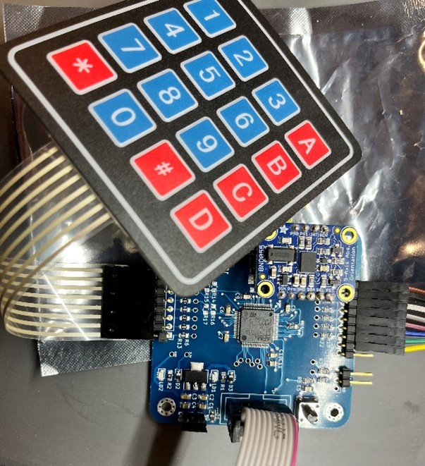
Figure 12.3 – Keypad test with PCB
For the following week, I will continue to work with Jehan on developing our camera script and making sure we are collecting the required data for our VSLAM package. Our next step is getting a hardware accelerated version of OpenCV on the nano for writing our camera script.
Description of design efforts:
This week, I set up the Docker container on the lab nano using the Docker image and scripts Jehan provided. Once the container was set up properly, I wrote the camera publisher node using scripts from ArduCAM’s repo [1] and Jetson Hacks [2].
• Docker Container
I helped with mounting the workspace and file system that we will use in our Docker container for development in ROS2. The rest of development on the Docker container was done by Jehan who thoroughly researched and wrote a Dockerfile that installs all the necessary dependencies for our project. Once the Dockerfile was finalized, I used Jehan’s instructions and scripts to build the Docker image on our lab nano. This build process took several hours, so I left it over night for installation. Figure 13.1 below shows the successful build of our Docker image. This will be crucial for allowing us to write the ROS2 nodes that will be the framework of our high-level software to achieve a reconstruction. Once I started the Docker container, I ran some tests using example nodes and packages that are pre-installed in ROS2 [3]. Figure 13.2 below shows the successful results of running these nodes. Now, we are able to develop our ROS2 nodes for publishing data to the topics that our VSLAM package needs.
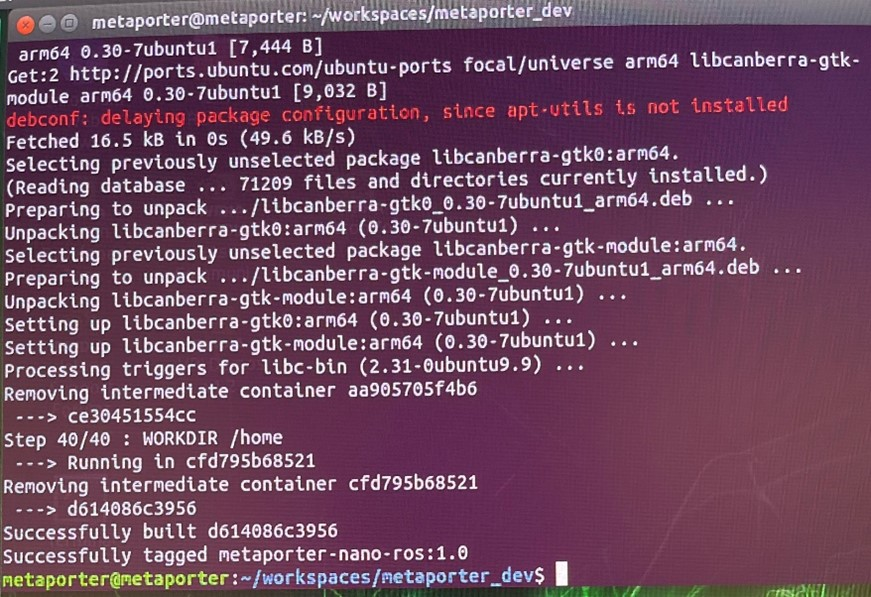
Figure 13.1 – Successful Docker Image Build
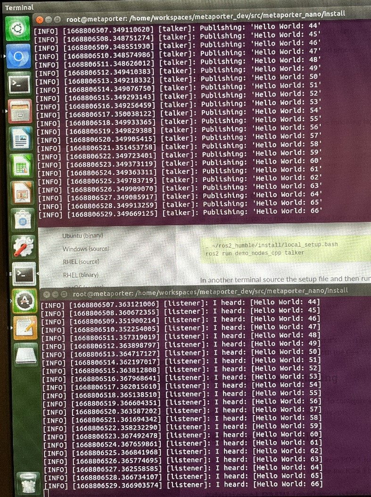
Figure 13.2 – Example Publisher & Subscriber Nodes Working
• Camera Publisher Node
Using ArduCAM’s Camarray_HAT repo [1] and a JetsonHacks script Jehan found to capture images from the camera [2], I wrote the camera publisher node as an organized class using ROS2 primitives. While I did not have the camera in lab to test the script, I worked out the majority of the runtime errors to ensure it works seamlessly when integrated. After extensive research, the one issue I ran into was the availability of the camera_info_manager package for Python. Our VSLAM package is dependent on CameraInfo data for the rectification and intrinsic camera matrices; however, the package that retrieves this data works only with C++ packages. Therefore, we must rewrite our Python publisher node in C++ to utilize this. The implementation of this publisher node is essential for getting a better camera pose with VSLAM for a precise 3D rendering.
For the following week, I will start working on our ROS2 IMU publisher node to ensure our VSLAM package receives the appropriate data for an accurate pose and reconstruction. In the meantime, Jehan will take over the camera publisher node revisions and testing.
Description of design efforts:
This week, I wrote and tested a ROS2 camera subscriber node and started working on triggering nano operations with a keypad press.
• Camera Subscriber Node
In order to get the camera images on the host machine (from the Jetson nano), we decided to upload them to an AWS S3 bucket that the host machine will pull from. Therefore, I wrote a ROS2 subscriber node that converts each ROS2 image message into a .jpeg image and saves it to a directory before Manav’s script uploads them to the bucket. Jehan and I tested both the camera publisher and subscriber nodes that I wrote, and figure 15.1 below shows the success of the images being published and saved to a directory. We had issues trying to run the nodes on separate machines in order to save the images directly to the host machine from the Jetson nano; therefore, we needed the S3 bucket implementation to be an intermediary. As we must supply the NERF software on the host machine with our images for the 3D reconstruction, these nodes are crucial for the operation of our entire device.
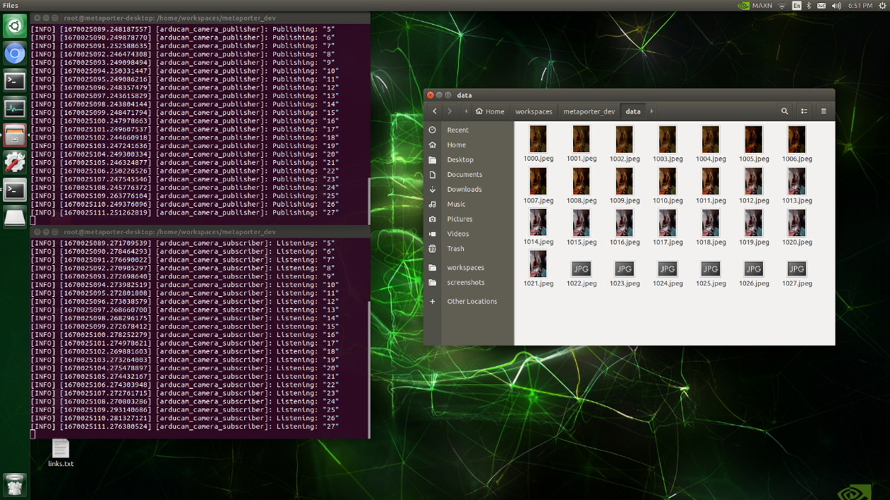
Figure 15.1 – Successful Camera Subscriber Saving Images
• Nano ROS2 Trigger
Using the UART interpreter class I created in Python, I can read the UART data sent from our microcontroller over a serial port on our Jetson nano. This allows me to read and interpret the IMU sensor data; however, it also lets me interpret when our unique start and stop bits are being sent for the data collection process. I modified my script to detect when these bits are sent and trigger a command to start the Docker container that runs our ROS2 camera nodes for data collection. I am also adding the stop procedure which safely exits all processes. This feature will be essential for synchronously starting all software operations on the Jetson nano with the embedded hardware.
For the following week, I will wrap up my work on starting and stopping the Jetson nano operations with the keypress. Then, I will focus on any final areas that require my attention for overall product integration before our demonstration.
Week 16
Date: 12/12/2022
Total hours: 24
Description of design efforts:
This week, I swapped out the camera, modified scripts to run without ROS and Docker, and helped with script automation.
• Camera
After putting all the scripts together to capture camera images and upload them to S3, we tested NERF with different object reconstructions. After numerous tests with different featureful subjects, we noticed the reconstruction and images were of much poorer quality compared to the one we did at the beginning of the semester. Therefore, we decided to swap out the stereo camera for the Raspberry Pi Cam v2 in order to capture better quality images for the reconstruction. After installing the new camera, our Jetson nano could not detect it, so I tried troubleshooting with a borrowed nano from the lab. The Pi Cam worked seamlessly with the other Jetson nano; therefore, I believe we had a compatibility issue with the upgraded JetPack version on our Jetson nano. I copied over the scripts and files to the SD card running the older JetPack version and tested it out on our nano. The Pi Cam worked for all tests and collected much higher quality images. In addition, camera image collection was simplified by eliminating ROS and Docker since we will no longer be using VSLAM to determine the camera pose with the IMU data. The camera info necessary for the package was not easily retrieved with ROS, so we cut these parts out altogether. After running additional tests with NERF, we came to the conclusion that a video recording yielded a much clearer reconstruction than the pictures, so we made these changes to the scripts. Figure 16.1 below shows the 3D reconstruction with video. All in all, this week’s work on the camera was essential for producing better reconstructions and having an overall successful project.
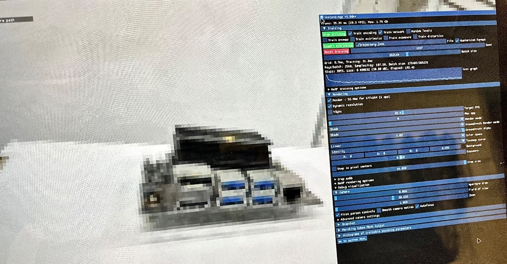
Figure 16.1 – 3D Reconstruction with Video
• Script Automation
It took us quite a while to figure out how to run a script in the background for camera capture while the IMU data is still being read on the terminal. Our researching and tests led to using the Python subprocess module. With this, we are able to open a subprocess script and have it seamlessly run in the background. We also ran into issues with the termination of this subprocess, however, and simply using the terminate function would abruptly kill the process in the middle of camera capture (causing data corruption). Therefore, I suggested sending a SIGINT signal which is the same as pressing Ctrl+C in the terminal to exit the process more safely. This change fixed the errors and corruption. Overall, this step was crucial for our project completion as it allows us to register a keypad press over UART and start camera capture at the same time that IMU data is being read in the terminal.
For the rest of this week, I will help update the website and prepare for the final presentation. Overall, I had a very valuable experience working on this project and look forward to applying my knowledge and skills to future engineering projects.